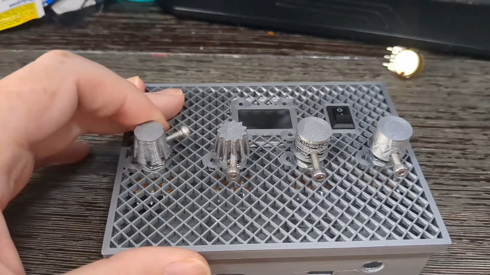
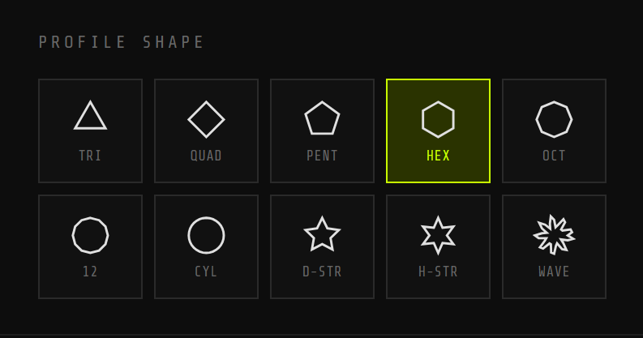
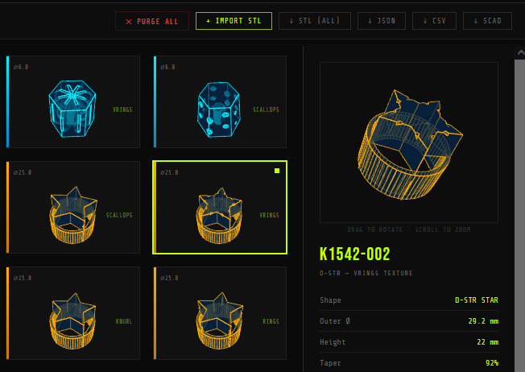

Commercial synthesizer interfaces present significant accessibility barriers for musicians with motor and sensory impairments. Standard controls are typically small, smooth, and closely spaced, requiring high-precision pinch grips and force. Globally, roughly 16% of the population lives with physical disabilities affecting daily functioning and motor coordination [1]. Among clinical cohorts, diabetic peripheral neuropathy eventually affects nearly 50% of adults with diabetes in their lifetime, causing progressive muscle weakness, paresthesia, and diminished tactile sensation in the hands and feet [2].
This lived co-design encounter inspired **ACCESS KNOB**, an open-source browser-based parametric customizer. Built on Universal Music Design (UMD) principles, the project shifts the paradigm from mass-produced controls to personalized, user-fabricated interfaces that enhance musical expression, independence, and creative control.
[1] World Health Organization. 2022. Global report on health equity for persons with disabilities. Geneva. who.int/health-equity-report
[2] Hicks CW, Selvin E. 2019. Epidemiology of Peripheral Neuropathy and Lower Extremity Disease in Diabetes. Curr Diab Rep 19, 10: 86. ncbi.nlm.nih.gov/articles/PMC6755905
Traditional CAD tools present steep learning curves and lack accessibility. ACCESS KNOB utilizes a client-side WebAssembly-compiled **Manifold** geometry kernel to perform boolean operations in milliseconds, enabling real-time parameter tweaking directly in the browser.
Two Mounting Modes & Three Spindle Bores:
- Swap-In Mode: Replaces the original manufacturer knob entirely. Generates custom internal flat/splined bores to slide flush onto the bare metal/plastic spindle.
- Slide-Over Mode: An adaptive sleeve that slides snugly over the original control cap, preserving the instrument's resale value and avoiding complex hardware disassembly.
- Spindle Bore Profiles: Generates custom flats/splines for D-Shafts, Knurled/Splined (18/24-tooth gears), and Solid Round spindles (secured via integrated M3 set-screw).

To democratize fabrication for makerspaces without access to 3D printers, ACCESS KNOB includes a 2D vector SVG stacking exporter. This tool enables subtractive manufacturing (laser-cutting or CNC routing) using sheet materials (wood, acrylic, basswood, or composites).
System Assembly Mechanics:
- Kerf Compensation: Sub-millimeter adjustment (default 0.1 mm) ensures slots and outer boundaries match target shapes after laser-cutting.
- Dual Alignment Rods: Generates two rods of width
thicknessand lengthheightKnob + kerf. Slits are cut through all stacked layers, allowing the rods to slide through, aligning the pieces perfectly for gluing. - Layer Taper: Outer contours are calculated iteratively at height intervals to preserve the overall tapered ergonomic profile.
Material choice impacts physical sensation, thermal stability, and control responsiveness during musical play:
| Material | Process | Rigidity | Friction | Tactile Feedback & Damping |
|---|---|---|---|---|
| PLA | 3D Print | Medium | Medium | Hard contact; crisp edges; poor damping |
| PETG | 3D Print | High | Medium | Tough structure; hard contact; poor damping |
| TPU | 3D Print | Low | High | Soft elastomeric grip; high damping |
| Basswood | Laser-Cut | Medium | Medium-High | Warm organic feel; good damping |
| Acrylic | Laser-Cut | High | Low | Hard polished surface; poor damping |
| Foam | Laser-Cut | Very Low | Low | Spongy texture; excellent vibration absorption |
| Cardboard | Laser-Cut | Low | Medium-High | Matte texture; high damping; low durability |
| Cork | Laser-Cut | Low-Medium | High | Textured grip; excellent damping and shock absorption |

To evaluate how parametric adjustments reduce required physical force, we model the peripheral finger force F required to rotate a potentiometer with torque resistance T:
Increasing the outer diameter D from a standard 10 mm to an accessible 32 mm or 40 mm reduces the required finger pinch force by 68.8% to 75.0%, compensating directly for reduced grip strength.
| Diameter (D) | Required Force (F) | Force Reduction |
|---|---|---|
| 10 mm (Standard) | F10 = 2T / 10 | 0.0% (Baseline) |
| 15 mm | 0.67 · F10 | 33.3% |
| 25 mm (Medium) | 0.40 · F10 | 60.0% |
| 32 mm (Large) | 0.31 · F10 | 68.8% |
| 40 mm (Accessible) | 0.25 · F10 | 75.0% |
Grip Shear Force: For musicians utilizing palm-dragging or side-of-hand shear techniques, the functional friction force Ff driving rotation is modeled as:
where μ is the material's friction coefficient, and Fn is the normal force. Taller knobs expand contact area A, distributing downward pressure to enable actuation with minimal pinch grasp requirements.

Hands-Free Design Customization:
The web customizer features high-contrast glowing visual focus states, supporting commodity webcam head-tracking and facial gesture interfaces (Google Project Gameface, Apple Voice/Switch Control).
Future Work & Clinical Evaluation:
We are expanding the customizer to generate fader caps and drum pads. We propose an IRB-approved protocol with N = 12 musicians with hand impairments to assess custom slide-over vs. swap-in controls. Evaluation metrics will include task completion times, error rates (such as accidental adjacent knob nudging), and System Usability Scale (SUS) scores to evaluate creative agency.
